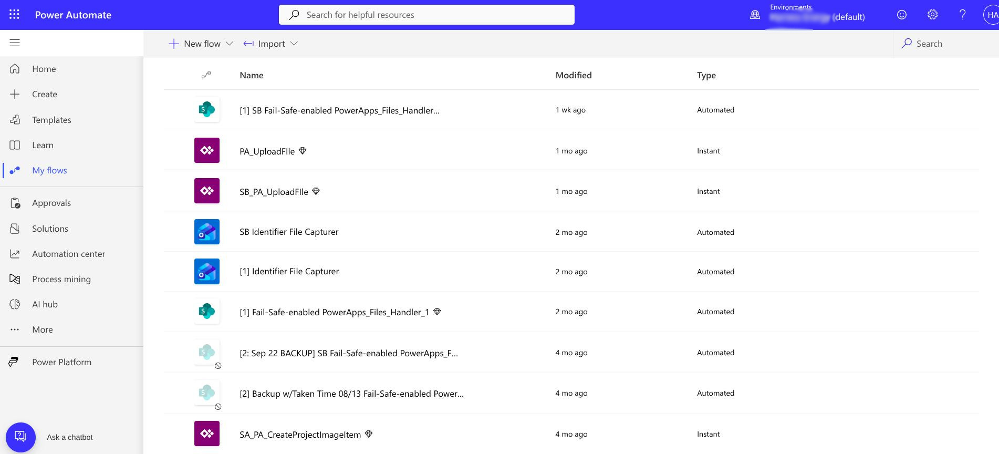
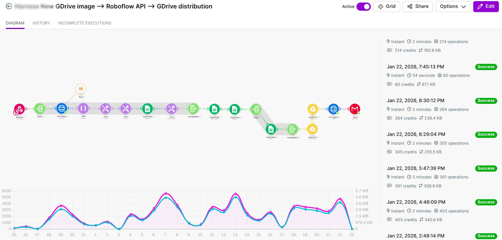
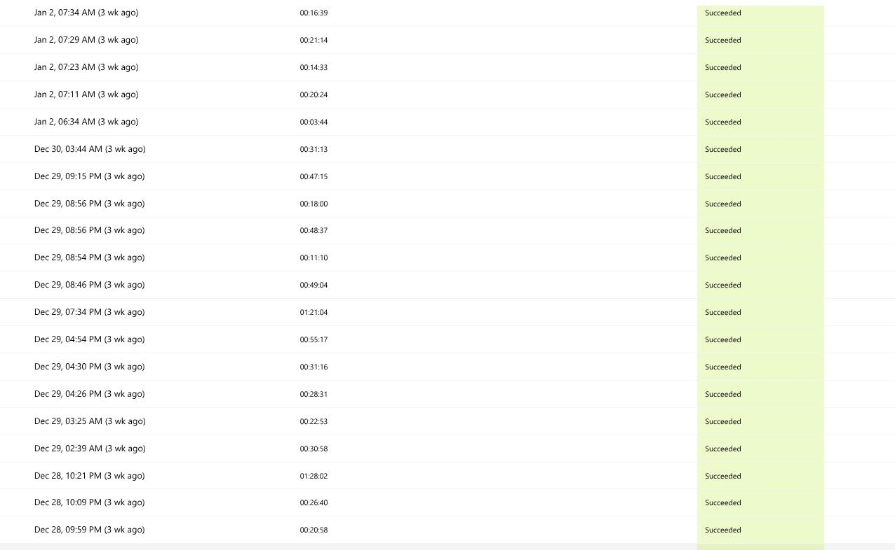
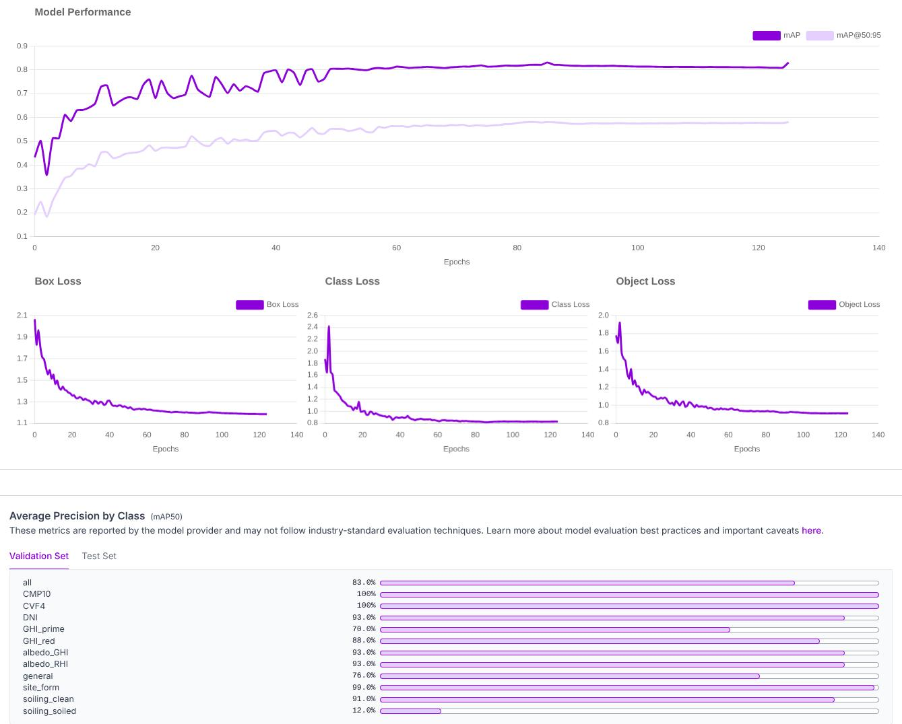

Mobile Capture & Data Input Layer
Implemented a Power Apps mobile interface optimized for field technicians working on-site
during solar equipment installations. The app prioritizes simplicity and speed to maximize
adoption and data quality.
Platform:
Microsoft Power Apps mobile canvas app
User Workflow:
Select project → Set visit date → Upload one or multiple photos per visit
Design Philosophy:
Simple, friction-free UX ensuring every image is tied to correct operational context
Metadata Capture:
Project ID, visit date, technician info, GPS coordinates (optional)
Automation Layer - Workflow Orchestration

Microsoft Power Automate backend automation handling file attachment lifecycle with validation, batching, and error handling
Built Power Automate flows as the backbone of the ingestion pipeline, managing the complete
attachment lifecycle from upload through AI processing to final storage.
Flow Responsibilities:
Receive uploads, validate payload structure, batch multiple attachments, route to processing
Reliability Engineering:
Retry logic, conditional routing, structured logging, graceful degradation
Fail-Safe Patterns:
Workflow continues even when some files fail, preventing broken runs
Integration Points:
Power Apps trigger → Processing pipeline → Cloud storage → Reporting systems
Make.com Supporting Flow

Make.com automation scenario providing additional orchestration, data transformation, and external API integration capabilities
Implemented Make.com (formerly Integromat) scenarios to handle advanced orchestration requirements,
complex data transformations, and integrations beyond Power Automate's native capabilities.
Use Cases:
Complex conditional logic, parallel processing, external API calls, data enrichment
Integration Pattern:
Webhooks from Power Automate → Make.com processing → Results back to cloud storage
Advantages:
Visual workflow builder, advanced error handling, extensive API connector library
Flow Execution & Monitoring

Production flow execution history showing successful runs with timestamps, ensuring reliable real-world operation
Implemented comprehensive monitoring and logging infrastructure to track pipeline health,
execution success rates, and performance metrics across production operations.
Execution Tracking:
Run history, timestamps, success/failure indicators, execution duration
Reliability Metrics:
Success rate monitoring, failure pattern analysis, bottleneck identification
Real-World Performance:
Consistent execution under field conditions (multiple images per job, variable connectivity)
Debugging Support:
Detailed logs capturing context for troubleshooting without slowing field operations
Computer Vision Processing Pipeline

Custom computer vision model training interface for equipment detection and quality classification with confidence thresholds
Each uploaded image is routed through a trained CV model pipeline that performs detection,
classification, and quality assessment, producing normalized, machine-readable outputs.
Model Training:
Custom vision models trained on solar equipment installation images
Detection Tasks:
Equipment type identification, installation quality flags, positioning verification
Output Structure:
Equipment labels, quality flags, confidence scores, extracted metadata
Quality Controls:
Confidence thresholds prevent uncertain detections from being treated as final results
Post-Processing:
Normalization logic ensures outputs are reporting-ready without manual cleanup
LLM Enhancement & Contextual Analysis

LLM performance monitoring dashboard showing processing efficiency, response quality, and contextual understanding metrics
Integrated Large Language Models to provide additional context, generate human-readable summaries,
and enhance Computer Vision outputs with natural language descriptions and recommendations.
LLM Use Cases:
Convert CV outputs to natural language, generate issue summaries, recommend next actions
Performance Tracking:
Response time monitoring, output quality scoring, token usage optimization
Integration Pattern:
CV detections → LLM contextual enhancement → Structured report generation
Output Enhancement:
Technical findings translated to actionable insights for field operations
Cloud Storage & Structured Reporting
Processed images and AI-derived metadata are stored in the company's cloud infrastructure
with structured outputs enabling immediate operational use.
Storage Architecture:
Cloud-based file storage with metadata indexing and tagging
Output Format:
File links, equipment tags, QC results, confidence scores, issue flags
Searchability:
Structured metadata enables filtering by project, date, equipment type, quality status
Reporting Integration:
Data feeds directly into operations dashboards and quality reports